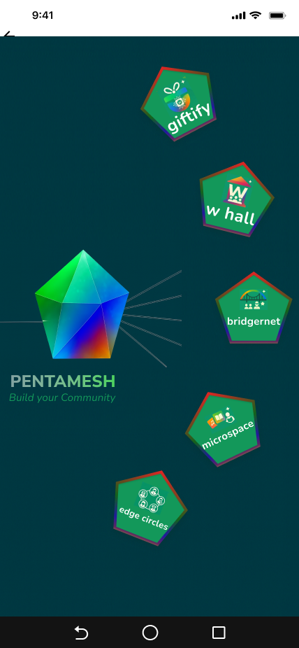
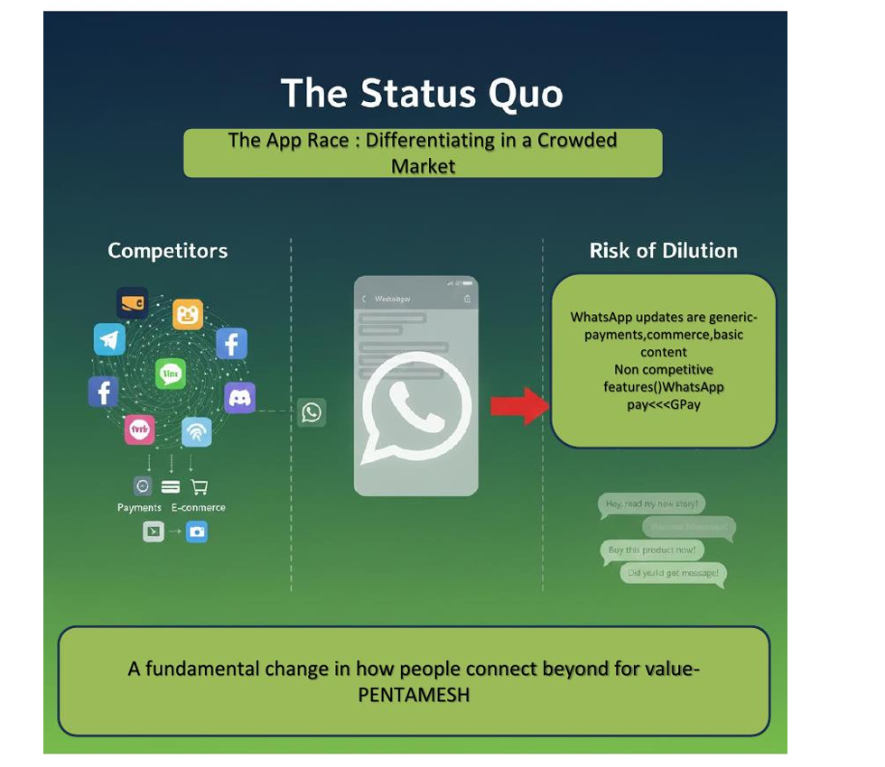
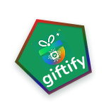
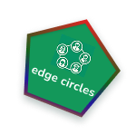
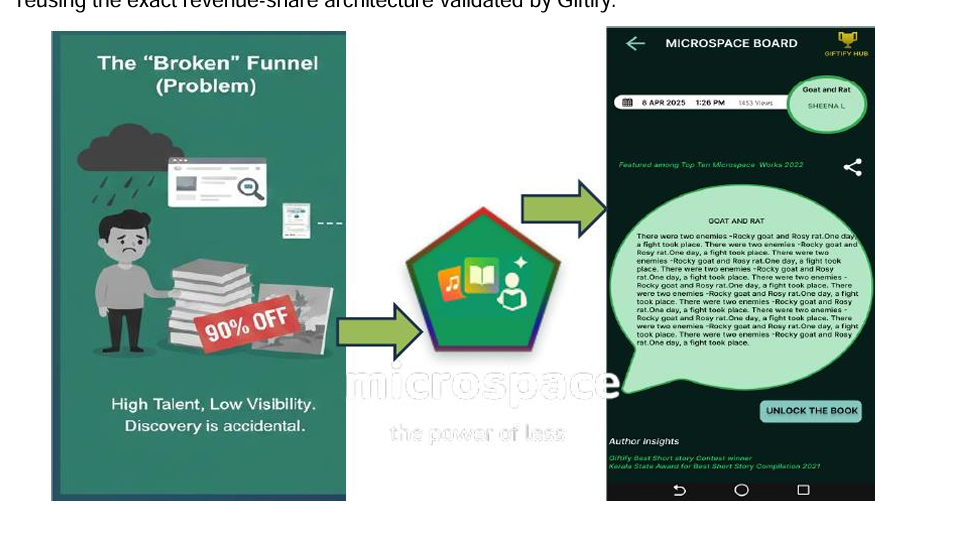
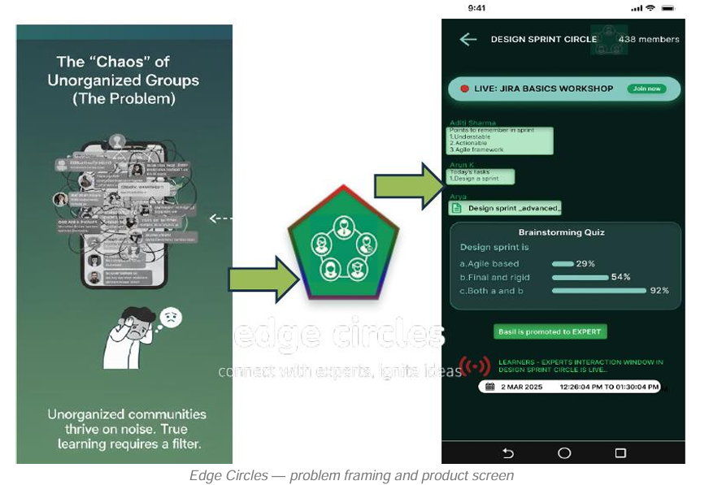
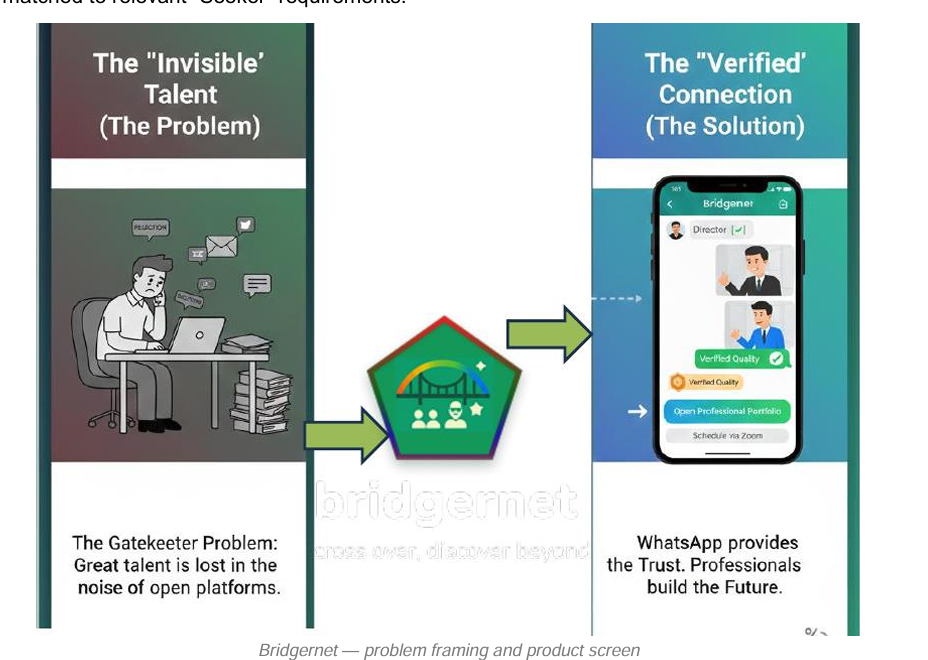
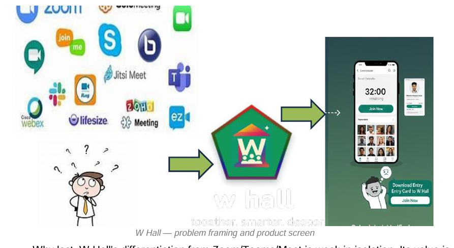

A platform strategy to move WhatsApp's 3-billion-user base from messaging utility into trust-driven social commerce — without diluting the identity that makes it the default communication layer for billions.

The Pentamesh hub — five filaments, one entry point, Giftify live today.
Pentamesh isn't Giftify — it's a five-part platform strategy. The hardest work wasn't designing five features; it was defending which one to build first on more than "it felt right." Every filament was scored on an Impact-vs-Effort matrix before a single PRD was written.
Lowest technical risk. No new verification systems, no content-moderation pipeline, no marketplace-liquidity problem to solve first.
Fastest validation loop. Gifting is a behaviour users already understand from Instagram, iMessage, Telegram — the only new variable is whether they'll do it inside WhatsApp.
Reusable infrastructure. The appreciation-token mechanism becomes the reward currency all four future filaments plug into.
Revenue model proof point. Validates the revenue-share-with-partner model on a simple transaction before it carries higher-stakes flows.
Celebration happens inside the conversation — a birthday, a thank-you, a congratulations. But gifting today means leaving WhatsApp entirely: opening a shopping app, browsing, paying, then manually pasting a confirmation back into chat. WhatsApp Pay exists, but reads as transactional, not celebratory — no personalisation, no visual flair, no contextual spark. And there's no safe way for WhatsApp to facilitate gifting without exposing receivers to unsolicited gifts, or turning itself into an e-commerce business.

The wider bet behind Pentamesh: bolt-on features (payments, status ads, basic catalogues) compete where WhatsApp is weakest. A mesh of trust-native filaments competes on ground no one else can copy.
WhatsApp handles discovery and notification. Every e-commerce partner — Amazon, Flipkart, Myntra — handles the actual order, payment capture, and delivery.
Sender browses the in-chat gift catalogue, picks an item, and pays — without ever leaving the conversation.
The receiver sees the gift as a native chat-bubble, not a redirect or external link. Payment completes before notification fires — under 5 seconds, so there's no "phantom gift" moment.
Receiver accepts, or flags the sender as unknown. A report triggers an automatic refund — no manual support step, no window for anonymous-sender harassment.
Anti-stalking by designOn accept, the receiver picks a partner platform for delivery — default address pre-filled, fully overridable. WhatsApp's role ends here; the partner owns logistics from this point on.
Individual filament metrics only tell you if one feature has users. WCFAR tells you if Pentamesh is an ecosystem — or five unrelated features that happen to share an app.
% of Pentamesh users engaging with two or more filaments in a given week. Only becomes measurable from Phase 2 onward, once a second filament is live alongside Giftify — Phase 1's job is to build the appreciation-token and commission infrastructure that measurement depends on.
| Giftify metric | Definition | Target |
|---|---|---|
| Gift Redemption Rate | Received gifts exported to a partner (Giftify's own north star) | ≥40% → >65% |
| Acceptance vs. Rejection | Accepted gifts vs. reported "unknown sender" gifts | Near-zero reports |
| Revenue Share Accuracy | Fulfilled orders with correctly logged commission | 100% reconciled |
| Payment → Notification Latency | Time from payment complete to receiver notified | <5 seconds |
Ten functional requirements gate the MVP, five non-functional constraints protect trust and reliability, and the rollout is staged in three gated steps — none of these are optional polish.
| Requirement | Priority |
|---|---|
| In-app gift catalogue — browsable categories + search, inside the Giftify hub | P0 |
| Send-gift flow: select contact → item → pay → confirm, without leaving WhatsApp | P0 |
| Gift notification as a native chat-bubble, including sender identity | P0 |
| Accept / "Report as Unknown Sender," with automatic refund on rejection | P0 |
| Export-to-e-commerce: receiver selects partner; order + delivery owned by partner | P0 |
| Default delivery address from receiver's e-commerce account, overridable | P0 |
| Revenue-share / commission logging, reconciled against partner reporting | P0 |
| Appreciation-token / Hall-of-Fame engine tracking achievements → rewards | P1 |
| NLP contextual-trigger suggestions ("Happy Birthday" detection) | P2 |
| "Win Pentamesh Gifts" / cross-filament wishlist inside the Giftify hub | P2 |
| Stage | Scope | Gate to next stage |
|---|---|---|
| Alpha | Gift catalogue, send/receive, accept/reject, one e-commerce partner | Latency target met; refund-on-reject verified end-to-end |
| Beta | Expanded catalogue, 3 e-commerce partners, Hall-of-Fame enabled | Revenue Share Accuracy at 100% reconciliation, all partners |
| GA | Full rollout, NLP contextual suggestions enabled | Gift Redemption Rate ≥40%, Acceptance baseline set from Beta |
Giftify is the one that's built — but Pentamesh was scoped as five filaments from day one. Every filament connects to all four others with its own named synergy: discovery, content circulation, live hosting, and reward recognition all cross-wire the mesh, not just a single shared backend.
Pentamesh is a complete mesh, not a hub. Every filament connects to all four others with a distinct, named integration — not a generic "shared backend." Giftify is simply the one built and prototyped first, for its lowest build risk, not because it's architecturally central.


Giftify rewards expert insight, learner growth, and admin service inside Edge Circles with recognition.
Event participation in W Hall earns Giftify credits, spendable anywhere in the ecosystem.
Exceptional uploaded assets on Bridgernet earn Giftify awards and competition credits.
Evaluated, standout Microspace content earns Giftify credits automatically.
Circles host expert sessions, workshops, and admin elections directly inside W Hall.
Bridgernet grants open access into relevant circles, matched by interest and credentials.
AI circulates Microspace stories into relevant circles to fuel engagement and learning.
Bridgernet subscribers get AI-matched automatic entry to relevant W Hall events — celebrity sessions, premieres.
Microspace content plays during breaks or technical delays — and can host its own W Hall sessions too.
Relevant creative content is cross-shared between both filaments.
Plus one proof point already live in the Giftify prototype: right after payment, the sender is asked to "Gift a Pentamesh member from Edge Circles / Bridgernet / W Hall / Microspace" — the mesh reaching into a real screen, not just a diagram.
In-chat gifting: send a real, deliverable gift without leaving WhatsApp. Fulfilment fully outsourced to e-commerce partners — WhatsApp owns discovery and notification only, never inventory or logistics.
Short literary works reformatted into chat-native serialised "chat-fiction," distributed through WhatsApp Status. At a cliffhanger, an "Unlock the book" action routes the reader to an e-commerce partner — WhatsApp earns an affiliate commission on the sale.

Niche, verified communities connecting experts and learners across sectors. Admission is screened through a "WhatsApp Edge Protocol" and governed by rotating, democratically elected admins — not platform moderators.

A supply pool (scriptwriters, composers, inventors) matched to a demand pool (directors, producers, investors) with no traditional gatekeepers. Uploaded assets get an instant Certificate of Digital Deposit, are evaluated for quality, and matched to relevant Seeker requirements.

An inbuilt virtual meeting space — centralised event calendar, tiered-subscription workshop access, secure entry-pass verification — positioned as the live engagement layer for events generated by the other four filaments.

"The hardest part wasn't designing five features — it was deciding which one to build first, and being able to defend that on more than 'it felt like a good idea.'"
The Impact-vs-Effort exercise forced a discipline an unstructured five-feature draft never would have: Giftify had to earn its own user value and justify the shared system it leaves behind. If I were presenting this to a cross-functional team, I wouldn't lead with five separate PRDs — I'd lead with the phased rollout table. It answers the question every stakeholder asks first: what are we shipping now, and how does it set up what comes next?